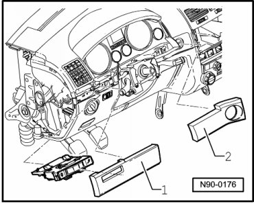
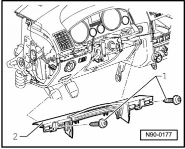
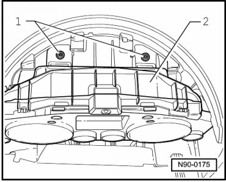
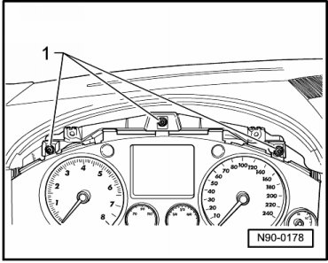
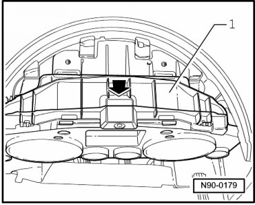
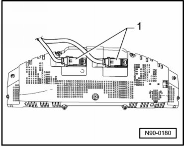

Instrument Cluster
Instrument Cluster
Special tools, testers and auxiliary items required
• Release lever (T10039)
• Wedge (T10039/1)
Removing
• Removal of the steering wheel is not necessary. To improve clarity, the steering wheel is not shown in the following illustrations.
• If the instrument panel insert is to be replaced --> [ Instrument Cluster ] [1][2]Component Tests and General Diagnostics.
- Using the electrical or mechanical adjustment mechanism, fully extend and lower the steering wheel.
- Switch off ignition, switch off all electrical consumers and remove ignition key.
- Pry trim strips - 1 - and - 2 - out of locking mechanisms using wedge (T10039/1).

- Remove bolts - 1 - from upper cover piece of steering column - 2 - and remove it.

- Remove instrument cluster visor --> Body Interior 68 Removal and Installation.
- Remove bolts - 1 - from bracket of instrument cluster visor - 2 -.

- Remove screws - 1 -.

- Remove bracket for instrument cluster visor - 1 - upward in - direction of arrow -.

- Remove instrument cluster and disconnect harness connectors - 1 - on rear side of instrument cluster.

Installing
Install in reverse order of removal, noting the following:
- Place the instrument panel insert into the opening and connect the connectors.
- Install bracket for instrument cluster visor.
- After installing, test the functions of the instrument cluster.